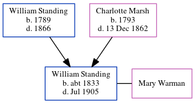

William Henry Standing c1833 - 1905
[ Home ] | [ Calendar ] | [ Surnames Index ] | [ Census Index ] | [ Family History ]The child of William Standing (an agricultural laborer) and Charlotte Marsh, William Standing, the first cousin four-times-removed on the father's side of Nigel Horne, was born in Folkestone, Kent, England c. 18331,2. He married Mary Warman in Folkestone on Mar 1, 18653. In 1861, he was living in Vessels, Kent, England1.
He died in Jul 1905 in Elham, Kent, England2.
Parents
- William was born in 1789
- Charlotte was born in 1793
Citations
- 1861 England Census Online publication - Provo, UT, USA: The Generations Network, Inc., 2005.Original data - Census Returns of England and Wales, 1861. Kew, Surrey, England: The National Archives of the UK (TNA): Public Record Office (PRO), 1861. Data imaged from the National (Relation to Head of House: Seaman)
- England & Wales, FreeBMD Death Index: 1837-1915 Online publication - Provo, UT, USA: The Generations Network, Inc., 2006.Original data - General Register Office. England and Wales Civil Registration Indexes. London, England: General Register Office. © Crown copyright. Published by permission of the Cont
- England, Select Marriages, 1538–1973 Ancestry.com Operations, Inc.
Family Tree
Generated by ged2site. Last updated on Jun 11, 2024